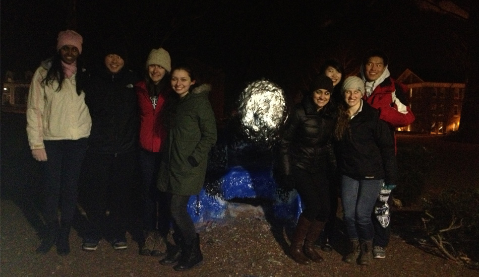

Executive Board 2013-2014
| Faculty Advisor | Dr. Lauren Black |
| President | Sharada Sant |
| Vice President | Yuki Ito |
| Treasurer | Heather McSherry |
| Secretary & Public Relations | Jaclyn Foisy |
| Career Development Chair | Ava Sanayei |
| Outreach Chair | Kathleen Li |
| Social Co-chairs | William Wong and Emily Eickhoff |
| Freshman Representatives | Emma Inhorn and Amanda Ho |
| Graduate Representative | Nick Bayhi |